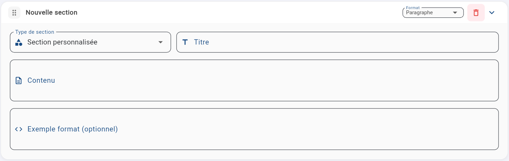
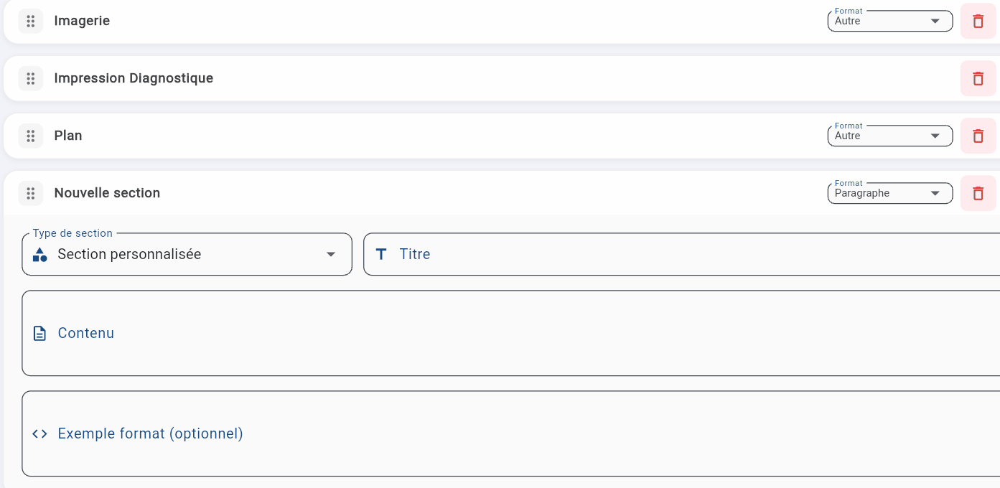
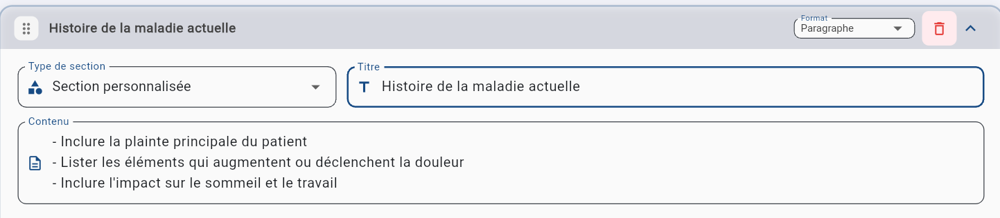

Configuration d'une section
Chaque section d'un gabarit se configure avec quatre éléments.

1
Titre
Nom de la section tel qu'il apparaîtra dans la note générée.
2
Format
Le format définit comment l'information sera présentée dans la note.

| Format | Description |
|---|---|
| Liste | Éléments séparés ligne par ligne |
| Liste à puces | Éléments avec tirets (- ) |
| Numérotation | Éléments numérotés automatiquement |
| Ligne | Tout sur une seule ligne, séparé par des virgules |
| Paragraphe | Texte rédigé en phrases complètes |
| Multichoix | Active un sélecteur de style lors de la génération (dans la page de génération de notes) : Liste, Liste à puces, Phrase courte, Phrase complète. |
| Autre | Format libre. Vous le définissez dans le champ Contenu |
3
Contenu
Instructions spécifiques pour cette section. Plume les suit pour décider quoi écrire et comment l'organiser.

Utilisez des verbes d'action : Écrit, Détermine, Identifie, Décrit, Inclure, Omet. Des instructions claires et directes donnent de meilleurs résultats.
4
Exemple format (optionnel)
Le champ Exemple format est optionnel, mais c'est l'outil le plus efficace pour obtenir un format de note très précis. Plutôt que d'expliquer le format en mots, vous montrez exactement ce que vous voulez. Plume IA reproduit la structure.
Pour en savoir plus sur les techniques d'exemple format (indicateurs, choix suggérés, variables), consultez la section Informations supplémentaires.